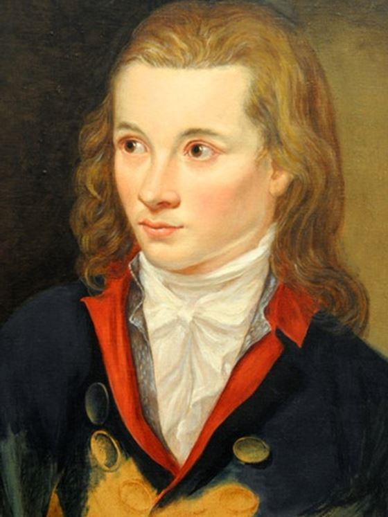
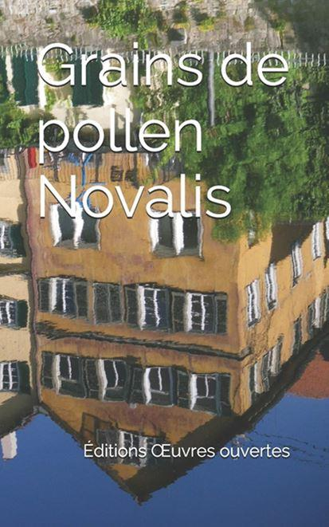

Le romantisme allemand fut à la fois une quête et une humeur. La quête romantique, au moins dans ses préférences, semble mieux connue que son humeur. Par des ouvrages didactiques, parfois hostiles, plus souvent hélas que par les œuvres, nous nous sommes formés, en France, une idée du Romantisme allemand comme d'une quête de l'irrationnel, d'un culte de la Nature et des forces obscures, d'un environnement de brumes et de forêts sur fond d'orchestrations wagnériennes. Nous savons de ces romantiques qu’ils écrivirent des romans d'initiation, qui s'aventurent du côté de l'orient et des arcanes du monde invisible. Les mieux informés, enfin, savent que les romantiques allemands furent aussi des philologues, des naturalistes, des mythologues qui eurent le souci de recueillir des contes et des légendes et d'esquisser une méditation sur la communauté de destin des Allemands.
La quête romantique, toutefois, ne se laisse pas distinguer de son humeur, qui ne se trouve que dans les œuvres, et relève d'une réalité plus subtile, plus impondérable que les « notions » dont la collecte peut satisfaire l'universitaire mais laisse ne suspens celui qui voudrait, lui aussi, « romantiser » avec les Romantiques, faire siennes leurs aspirations et leurs découvertes; ce qui est sans doute la seule manière de lire qui vaille mieux que l'ignorance.
Avant d'être une théorie, un système, s'il le fut jamais, le Romantisme allemand fut une façon d'être.
Pour savants qu'ils eussent été, férus de toute les sciences de leur temps non moins que d'excellents humanistes, connaissant souvent non seulement le grec, le latin, les langues romanes, mais encore le sanscrit et l’hébreu, pour encyclopédiques que fussent leurs curiosités ( ne méconnaissons pas tout ce par quoi l’œuvre de Novalis, par exemple, relève encore du dix-huitième siècle), les Romantiques n’en tinrent pas moins leur modi essendi, leurs façons d’être, leur présence au monde, comme supérieures aux modi intellegendi, aux « modes de connaissance », à l’intelligence didactique ou critique.
A ces poètes-métaphysiciens, qui revendiquèrent la phrase de Goethe : « Je hais tout savoir qui ne contribue pas à rendre ma vie plus intense », toute science était vaine qui ne fût ordonnée à l’être, autrement dit à une connaissance supérieure, à une sapience à la fois sensible et intelligible qui se laisse traduire non par des systèmes et des doctrines, mais par une qualité d’élégance et d’enchantement, de noblesse et de légèreté à laquelle les esprits pompeux et lourds ne peuvent rien comprendre et qu’ils tiendront toujours, à juste titre, pour ennemie.
Novalis, qui fut bien le contraire d’un esprit chagrin, Novalis qui fut tant aimé des dieux qu’il mourut à l’âge de trente ans, reprochait précisément à la seconde partie du Wilhelm Meister de Goethe ce retour au sérieux, à la vie domestique, au savoir planifié, cette trahison de l’intensité et de la joie, qui éclate, au profit du bonheur qui dure et qui s’étale. Rien n’est plus difficile à définir qu’une humeur, elle est ce « je ne sais quoi », ce « presque rien » dont parlait Fénelon, qui nous emporte. On peut, sans trop prendre le risque de se tromper, la dire juvénile, quand bien même Jean-Paul Richter en perpétua toutes les vertus jusqu’au grand âge).
On peut aussi, en hommage à Antoine Blondin, la dire vagabonde. La Lucinde de Schlegel, les Mémoires d’un propre à rien de Joseph von Eichendorf, annoncèrent la couleur : elle sera d’un bleu léger, d’une révolte sans pathos, souvent encline au libertinage, où le sens de la rencontre, du rêve et de l’ivresse avive le monde, délie les langues, dénoue les peurs, et nous précipite, avec impatience, vers le mystère des êtres et des choses.
Ces vertus, chères aux premiers Romantiques allemands, sont d’un genre viril. Elles se nomment liberté et courage, amitié chevaleresque et fidélité, et correspondent assez peu à l’image du Romantique se tordant les mains au clair de lune. L’humeur romantique se laisse aussi approcher par ce que Gobineau dit des « Calenders » dans son roman Les Pléiades, qui fut sans doute largement influencé par les romans de Jean-Paul Richter, et en particulier par Titan, - cet immense entrelacs de songes, d’aventures et de bonheurs. Si la peine et la mélancolie des temps qui nous abandonnent, la nostalgie et la déréliction, la folie même de ceux que frappe la foudre d’Apollon, la tragédie et la mort ne sont pas absente des œuvres romantiques, leur humeur, à qui fréquente leurs œuvres, fut d’emblée à la fantaisie, à l’audace, au rire et à l’ironie.
L’ombre et la lumière, au demeurant, n’existent que l’une par l’autre. Pour les Romantiques allemands, précurseurs, nous y reviendrons, de la logique du tiers-inclus, le Bien et le Mal ne sont pas des entités massive, irréductibles l’une à l’autre qu’affectionnent les esprits schématiques ; les crépuscules contiennent les aurores, et la Nuit dont Novalis écrivit les Hymnes, laisse se réfugier en elle, comme un éclat de lumière dans la prunelle de l’Aimée, tous les secrets du jour.
Il y aurait un livre entier à écrire sur l’ironie romantique.
Cette ironie n’est point le ricanement de la certitude ou de la supériorité, l’antiphrase didactique et condescendante de Voltaire, mais une reconnaissance de la nature double, visible-invisible, du réel. Tout sens apparent divulgue, à celui qui s’y rend attentif, un sens caché. Toute apparence est transparence. Le monde n’est pas cette prison de convenances ou cette autre prison que serait une liberté dépourvue de sens. Le monde nous parle. Pour les Romantiques allemand, le langage que le monde nous adresse à travers les cristaux de neige, les murmures des feuillages ou les rumeurs de la mer n’est pas radicalement différents de celui dont nous autres humains usons et mésusons à loisir. Cette similitude, cette parenté est, pour les Romantiques allemands, une leçon d’humilité et de prodiges. Elle témoigne d’un accord possible entre le monde et l’homme, elle annonce des solitudes immensément peuplées d’âmes.
« La nature ne montre pas, ne dissimule pas, mais fait signe » écrivait Héraclite. Le Grand-Œuvre des Romantiques allemands sera le déchiffrement de ces signes, - déchiffrement dont l’humour, comme en témoignent le Contes de Hoffmann, n’est pas exclu. Tant qu’il est possible de rire, à travers l’herméneutique elle-même, rien n’est perdu. Les Romantiques allemands sont d’autant moins obscurantistes que l’interprétation qu’ils proposent des apparences et des signes, des textes sacrés (dont font partie les œuvres des poètes) est infinie. La sapience romantique est aussi peu administrative que possible. Le jeu de symboles et des correspondances, ne s’y trouve ni réglementé, ni instrumentalisé.
Ruines du monastère d'Eldena, près de Greifswald de Caspar David Friedrich - 1824
On pourrait dire, dans un apparent paradoxe, que ce qui sauve les Romantiques allemands de l’obscurantisme, c’est précisément cette défiance pour le rationalisme. Le culte de la « déesse Raison », dont on connaît les ravages, leur fut largement étranger. Le fou n’est pas celui auquel la raison fait défaut, mais bien celui qui a tout perdu sauf la raison. Toutefois, se défier de la raison n'interdit point d'être logicien ni de faire de la logique un instrument de spéculation et de prospection. L'accusation d'obscurantisme habituellement portée contre eux tient d'autant moins que ceux qui la formulent furent bien souvent les héritiers ou les instigateurs du totalitarisme moderne. Que le réel soit dialogique, pour reprendre le mot de Gilbert Durand, voire, polyphonique et gradué, - et avec une grande part d'imprévisible, - qu'il y eût une interdépendance entre la connaissance, celui qui connaît et la chose connue, que les ombres soient colorées et nos âmes chatoyantes et « tigrées » pour reprendre l'admirable formule de Victor Hugo, que les frontières entre la réalité et le songe soient indécises, que les métaphores soient à l'œuvre, qui changent les feuillages en serpents d'or, les amoureuses en sirènes, les arbres en patriarches, que les dieux puissent surgir et transparaître, que la parole soit donnée aux hiboux ou aux chats, que la différence entre les fées et les libellules puisse n'être, en certains cas, que de pure convenance, tout cela qui appartient au patrimoine imaginaire, ne reste point sans ouvrir des perspectives d'avenir, de nouvelles logiques et de neufs enchantements.
Peu encline à la linéarité, on ne saurait dire si la pensée romantique fut davantage tournée vers le passé ou vers l'avenir. Bien plus que rectiligne, la pensée romantique est encline à l'arborescence, à la sporade, à la spirale. « Grains de pollen », les pensées se dispersent, mais chacune d'elle tient en elle, mystérieusement, le ressouvenir de son origine. Ainsi, les Romantiques allemands ne furent ni progressistes, ni passéistes, ni excessivement confiant dans le « sens de l'histoire », ni adeptes d'une pure théorie de la décadence. Issus d'une tradition de l'intériorité, d'une spiritualité « paraclétique » illustrée par Angélus Silesius, Franz von Baader ou Jacob Böhme, ils répugnaient à se croire enchainés à quelque déterminisme historique : l'Histoire, avec des bonheurs divers, était en eux.
Certains critiques, non sans pertinence, ont distingué, chez les Romantiques allemands, deux courants, l'un « révolutionnaire » et quelque peu napoléonien, et l'autre, « réactionnaire», tourné vers l'anamnesis, l'ésotérisme, la recherche des fondements de « l'Allemagne secrète », ainsi que le nommera Stefan George. Ces deux courants, toutefois, s'opposent moins qu'il n'y paraît. Ce qui paraît juste, c'est de discerner un glissement, qui est moins d’ordre politique que mythologique. Peu à peu s'éloignant du dix-huitième siècle, de l'euphorie d'une Révolution vue de loin, Prométhée cède la place à Hermès. A la logique du voleur de feu (qui, par Hegel, est aux soubassements du marxisme qui voit en Prométhée la figure tutélaire des révolutions) succède le « feu de roue » des Alchimistes, les feux tournants de l'athanor, qui sont à la fois l'âme et le monde, l’intériorité et l'extériorité.
A la marche forcée du sens de l'Histoire, Novalis, Chamisso, Jean-Paul, préfèreront la promenade où, quelquefois, et comme par inadvertance, le vagabondage se change en pèlerinage, où la simple inclination au voyage devient une quête du Graal. On pourrait dire que le courant « hermésien » de l'Encyclopédie de Novalis s'oppose au courant prométhéen de la phénoménologie de l'Esprit de Hegel, comme, en retour, la volonté planifiante, étatique, hostile à la bigarrure du monde, s'oppose à la contemplation, au recueillement. Les choses, bien sûr, ne sont pas aussi simple, et il y eut bien un « hégélianisme de droite » qui, de Villiers de l'Isle-Adam à Jean-Louis Vieillard-Baron, tenta de donner à la procession hégélienne de l'Esprit une dimension verticale, et, pour tout dire, gnostique. Force est cependant de reconnaître qu'en sa postérité, comme le sut montrer Michel Le Bris, l'œuvre de Hegel engendra les philosophies et les idéologies les plus closes, poussant la raison triomphante à la folie et les hommes à la servitude.
Paradoxalement, ce passage de Prométhée à Hermès, du rationalisme à une sorte de sapience holistique, ajoute à la pensée romantique une finesse questionnante, un scepticisme, un « je ne sais quoi » de pyrrhonien qui fera toujours défaut à la lignée rivale, demeurée fidèle à l'hybris du voleur de feu.
Il y a davantage de question que de réponses dans les «grains de pollen » de Novalis, et si peu d'acrimonie et de ressentiment, que son œuvre nous apparaît aujourd'hui venir d'un autre monde. Voici belle lurette que les hommes n'écrivent plus sans haïr, au point que bien souvent la haine, le dépit, la rancœur semblent les seuls moteurs de leur écriture. Le fiel est ce qui demeure lorsque les enchantements ont disparu.
Au-delà la de leurs diversités qui sont grandes et qui rendent bien difficiles d'en parler en quelques pages, les Romantiques allemands, des plus sombres aux plus clairs, des plus rieurs aux plus tourmentés, des plus optimistes aux plus pessimistes, sont tous des hommes, et des femmes, de l'enchantement.
Ces enchantements peuvent, eux aussi, être lumineux ou ténébreux, tels de douces brises sur la joue ou de noirs ensorcellements, des rencontres éblouies avec des paysages italiens, de suaves ensommeillements dans les bras des amantes ou des combats furieux contre des dragons; ces enchantements peuvent être austères ou dionysiaques, nous pencher de longues nuits sur des grimoires ou nous lancer dans de folles fêtes de fleurs ou de flamme; ces enchantements peuvent nous perdre ou nous sauver, peu importe, nous porter au-devant du monde sensible, dans les fracas, ou nous rassembler dans le silence d'une méditation mathématique, ils n'en demeurent pas moins la ressource commune à la tous les Romantiques allemands, leur irréfutable singularité, leur étrangeté dans un monde aussi désenchanté que le nôtre.
Nous sommes désormais si loin de tout enchantement que certains de nos intellectuels ont fait de l'enchantement l'ennemi par excellence: il facile de se faire un ennemi de qui ne règne plus ! Véritable arrière-garde, ces « intellectuels » (par antiphrase) persistent à batailler contre ce qui ne demeure plus qu'aux marges extrême de la vie. Dans ce monde planifié, rationalisé, médiatisé, dans ce technocosme surveillé, informatisé, où jamais la part du secret ne fut si rabougrie, ils voudraient encore nous persuader que l'enchantement est ce Mal à l'origine de tous les maux, ce germe du totalitarisme qu'il faut écraser avant qu'il ne s'éploie. Le désenchantement, la démystification, la déconstruction sont leurs grandes affaires, tout ce qui est numineux ou sacré est leur adversaire, comme si la grande « ruée vers le bas » et vers l'horreur n'était pas le démocratique produit du nihilisme et de l'hybris de la volonté, de la raison idolâtrée, planificatrice. Comme si de ne s'émerveiller de rien et de dénigrer toute chose, les hommes s'en trouvaient être meilleurs !
C'est méconnaître que l'enchantement est d'abord ce qui nous dénoue, ce qui nous surprend, ce qui sollicite notre hospitalité. C'est ne pas voir que l'enchantement est une « approche », ou, plus exactement, cette émotion qui survient au moment de l'approche, - à cette seconde magique où nous nous délivrons de nous-mêmes, de notre narcissisme individuel ou collectif, pour recevoir du monde un signe de bienvenue.
Le Voyageur contemplant une mer de nuages de Caspar David Friedrich
Voir dans l'enchantement un Mal est un étrange désespoir et ce désespoir mélangé d'optimisme historique ne laisse pas d'être inquiétant. Les Romantiques allemands pressentirent ce monde déserté des Anges et des Dieux, ce monde sans messagers, où plus rien n'advient de l'autre côté des apparences.
Mais si plus rien ne doit advenir, alors les apparences ne sont plus des apparences, mais des murs de néant. D'où l’élan romantique vers les prodiges, qui sont en nous tout autant que dans le monde: « Il est étrange, écrit Novalis que l'homme intérieur n'ait été considéré que d'une manière si misérable et qu'on en ait traité que si stupidement. La soi-disant psychologie est aussi une de ces larves qui ont usurpé dans le sanctuaire la place réservée aux images véritables des dieux... Qui sait quelles unions merveilleuses, quelles générations étonnantes sont encore renfermées en nous-mêmes ? »
L'entendement humain apparaît aux Romantiques allemands comme un instrument prodigieux et méconnu, un stradivarius dont on se servirait comme d'un tambourin avant de le laisser brisé et à l'abandon. Refuser l'enchantement, c'est ainsi refuser non seulement le poème, le chant des sirènes, mais la spéculation elle-même, l'Intellect dans ses plus hautes œuvres. Il y a, certes, un danger dans le chant, comme dans la pensée, on peut s'y perdre mais ce danger est le propre de l'humain et sans doute n'est-il point si grand que le danger que recèle, pour la beauté de la vie, le culte bourgeois de la sécurité à tout prix.
Par ailleurs, l'enchantement romantique est fort loin de sa caricature. Il n'est point cet abandon aux forces de la vie et de la nature, ce panthéisme primaire, cette passivité végétale ou infrahumaine, ce culte de la Magna Mater ou ce fondamentalisme écologique que ses adversaires dépeignent avec complaisance : « Bien des gens, écrit Novalis, s'attachent à la nature, parce que, comme des enfants gâtés, ils craignent leur père et cherchent un refuge auprès de leur mère ». S'il importe d'apprendre à manier la baguette magique de l'analogie, ce n'est pas au détriment de la déduction, mais en contraste avec elle, sachant que « les contrastes sont des analogies inversées ». Ainsi, « la vie des dieux est mathématique » mais « c'est en l'humain que se manifeste l'empire des cieux ».
Pour le Romantique, la science chante comme les nombres et rien n'est véritablement abstrait. « Chaque descente du regard en soi-même est, en même temps, une ascension, une assomption, un regard vers l'extérieur véritable ». L'enchantement est ce point, cette frontière incertaine où le monde intérieur et le monde extérieur se rencontrent. Nous pouvons choisir de lutter contre le monde, de le prendre à bras le corps, de le défier, mais, en dernière instance, cette joute est nuptiale. Entre l'élan prométhéen et la sagesse d'Hermès, il est un accord possible, que Novalis, avec génie, résume en une seule phrase : « Nous ne nous comprendrons jamais entièrement ; mais nous ferons et nous pouvons bien plus que nous comprendre ».
Partager cette page